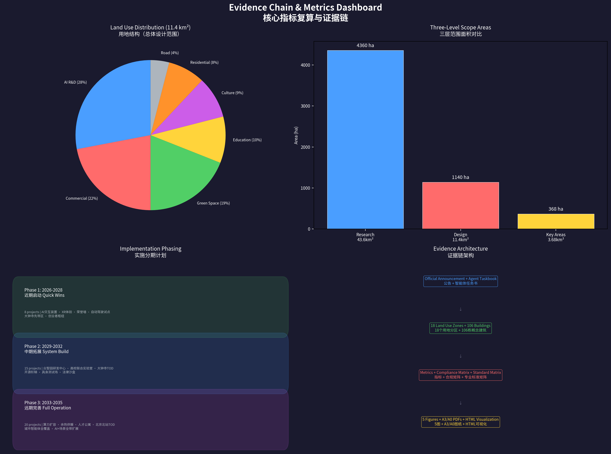

京张神经脊：百年铁路的AI重生 | Jingzhang Neural Spine: AI Rebirth of the Centennial Railway
A comprehensive urban design proposal for the 43.6 km2 Jingzhang AI Innovation Belt along the historic Jingzhang Railway Heritage Park in Haidian District, Beijing. Proposes a 'One Spine, Two Loops, Three Cores, Twelve Scenes' spatial structure, with 18 land use zones, 106 concept buildings, 12 AI scenario cards, 3 AI pilgrimage landmarks, 5 user personas, and a three-phase implementation strategy. Based on provisional boundaries pending official GIS/CAD data.
Jingzhang Neural Spine: AI Rebirth of the Centennial Railway
Design Basis and Source List
Primary Authorities
This formal proposal takes as its primary legal basis the "Centennial Jingzhang AI Innovation Belt Urban Design International Call for Proposals Prequalification Announcement" published by the Haidian Branch of Beijing Municipal Commission of Planning and Natural Resources on May 9, 2026 来源. The agent-facing open-call taskbook at brief/site-package/agent_taskbook.json provides the structured task framework, defining three positionings (Centennial Jingzhang Culture Strip, Urban AI Living Lab, AI Convergence Corridor), five functions, and the Three-Areas-Two-Wings spatial framework 来源.
The public source registry registers 7 formal-ready sources, 1 background-only source, and 1 provisional-only source 来源. Key formal-usable sources include: the prequalification announcement (A0/T0 authority), the agent open-call taskbook (CLEARED_USER_DOCUMENT), the Urban Design Management Measures, the Regulatory Detailed Planning Measures, the Territorial Spatial Land Use Classification Guide, the Generative AI Interim Measures, and the Barrier-Free Environment Law. Local reference snapshots with SHA-256 verification are maintained in the standards references directory.
Provisional Boundary Declaration
As of the submission date (August 11, 2026), the repository has not yet obtained official precise GIS/CAD redlines. All spatial data is generated from brief/site-package/geometry/provisional_boundaries.geojson, with all boundaries marked official_boundary=false, geometry_role=provisional_constraint, boundary_precision=provisional_rough. Provisional boundaries are used solely for AI agent generation, visualization, self-check, and design discussion. The organizer's data gap does not block content scoring, but upon replacement with official polygons, all layers and metrics must be uniformly recalculated 来源.

Three-Level Scope Framework
Level 1: Coordinated Research Area (43.6 km2)
The Coordinated Research Area extends north to the North 5th Ring Road, east to the Jingcang Expressway, south to Xizhimen Outer Street, and west to Wanquanhe Road, covering 43.6 km2. This scale determines the AI Innovation Belt's position within Haidian's and Beijing's broader innovation landscape 深度.
This proposal's core judgment: the Jingzhang corridor is not an industrial corridor -- it is the spatial carrier of an "innovation ecosystem." We identify four strategic tiers: Core Origination (fundamental research capacity of Tsinghua, Peking University, Beihang, CAS) to Transformation Acceleration (Zhongzhiyuan pilot platforms, Origin Community incubators, Technology Service Wing IP and capital) to Industry Carrying (Dazhongsi enterprise headquarters, Wudaokou AI+ commerce, Xizhimen TOD) to Global Radiation (annual AI event system, developer community, international communication). These four tiers form a gradient unfolding southward: "Originate to Accelerate to Carry to Radiate" 来源 深度.
Level 2: Overall Design Area (11.4 km2)
The Overall Design Area covers approximately 11.4 km2 within 1-2 km on either side of the Jingzhang Heritage Park. The question: along a 9-km linear park, how can urban renewal tools reshape the spatial order on both sides? 深度
This proposal advances a "One Spine, Two Loops" structure. The "One Spine" is the 9-km continuous public space axis of the Jingzhang Railway Heritage Park. The "Two Loops" consist of the Slow-Mobility Experience Loop (pedestrian-cycling-autonomous-shuttle system) and the Industry Service Loop (12 types of innovation service nodes distributed along the park corridor). The Spine carries public life and cultural heritage; the Two Loops ensure the efficient flow of innovation resources 空间数据.
Due to the absence of official regulatory planning conditions (FAR, building height, setbacks, green ratio, etc.), all construction intensity controls are marked status=unknown, with only concept design quantities provided for spatial organization logic. All pending items are recorded in assumptions.json 指标.
Level 3: Key Detailed Design Areas (368.4 ha)
Three key areas -- Zhongzhiyuan AI Indigenous Innovation Acceleration Area (192.1 ha), Beijing AI Origin Community (104.3 ha), and Dazhongsi AI Industry Cluster (72.0 ha) -- constitute the deepest design tier, each attaining the urban design depth of a comprehensive planning implementation scheme 深度 空间数据.
| Level | Area | Core Question | Proposal Strategy | Data Anchor |
|---|---|---|---|---|
| Coordinated Research | 43.6 km2 | How to spatialize the AI ecosystem | "Originate-Accelerate-Carry-Radiate" four-tier value chain | compliance_matrix.json |
| Overall Design | 11.4 km2 | How a 9km linear park organizes renewal | "One Spine, Two Loops" + 18 land use zones | land_use.geojson, roads.geojson |
| Key Areas | 368.4 ha | How each core achieves breakthrough | Zhongzhiyuan (full-stack autonomy) / Origin Community (transformation) / Dazhongsi (industry carrying) | key_areas.geojson, buildings.geojson |

Coordinated Research Area: Industry and Future City Research
From "China's Silicon Valley" to "Global AI Pilgrimage Destination"
Haidian is already China's undisputed #1 AI district -- home to over 1,000 AI scientists, 463 specialized "Little Giant" enterprises (38.1% of Beijing's total), and an innovation fund of no less than 90 billion RMB for 2026 来源. But the "China's Silicon Valley" positioning is a follower narrative. This proposal's core idea: the Jingzhang AI Innovation Belt should not become "Beijing's Silicon Valley" -- it should become "the world's Jingzhang." It needs an independent, irreplaceable global identity: the "AI Pilgrimage Destination" 来源.
Global Benchmarking and Haidian's Path
We draw four core lessons from global AI innovation districts:
London King's Cross -- "Enterprise Anchor + Knowledge Quarter Alliance." DeepMind's 2016 relocation created a magnetic effect: office vacancy dropped to 0.9%. The lesson: Haidian needs an anchor strategy bigger than DeepMind -- a "full-stack indigenous innovation" system brand 来源.
Singapore one-north Kampong AI -- "Government-Led + Live-Work Integration." Government developer JTC planned a dense village of about 70 AI companies within 14,500 m2, adjacent to over 200 talent housing units. The lesson: Zhongzhiyuan and Origin Community should embed residential, consumption, and social functions from day one 来源.
Shenzhen Hetao -- "Cross-Border Institutional Innovation." The Shenzhen-Hong Kong "One Zone, Two Parks" addresses institutional barriers to cross-border flow. The lesson: Haidian's "cross-border" is the institutional interface between AI R&D and AI regulation -- Zhongzhiyuan can become the international dialogue window for AI safety governance 来源.
Silicon Valley -- "Failure-Tolerant Cultural Infrastructure." Core competitiveness lies in "cafe density, VC activity, patent lawyer count, and pilot equipment sharing rate." The lesson: Jingzhang urban design metrics must add an "innovation density" dimension 来源.
Naming System: "Jingzhang Neural Spine"
Primary Name: Jingzhang Neural Spine (JNS). "Neural Spine" carries three semantic layers: anatomically, the spine transmits neural signals; computationally, neural networks directly reference AI; morphologically, a linear spinal park connecting multiple nodes precisely describes the spatial structure.
English Naming System: Three positionings -- Centennial Jingzhang Culture Strip / Urban AI Living Lab / AI Convergence Corridor. Three cores -- Zhongzhiyuan AI Sovereignty Campus / Beijing AI Origin Commons / Dazhongsi AI Industry Nexus. Tagline: "From Jingzhang Railway to AI Highway."
Overall Design Area: Urban Renewal and Regulatory-Plan-Level Urban Design
Spatial Structure: "One Spine, Two Loops, Twelve Scenes"
One Spine: The 9-km continuous public space axis of Jingzhang Railway Heritage Park -- a seven-layer overlay: jogging paths, cycling lanes, autonomous shuttle lanes, rail heritage displays, WiFi/5G coverage, AI interactive installations, and nighttime illumination 来源.
Two Loops: The Slow-Mobility Experience Loop (connecting the park, universities, communities, and metro stations) and the Industry Service Loop (12 types of innovation service nodes distributed along the corridor).
Twelve Scenes: 12 themed spatial nodes -- Xizhimen AI Time Hub, Railway Memory Segment, Rose AI Garden, Intelligent Living Market, Open Source Staircase, AI Legal Sandbox Entrance, Entrepreneur Hub, AI Education Corridor, Zhan-Turing Dialogue, Flight and AI, Full-Stack Autonomy Exhibition Hall, and Ecological AI Wetland.
Land Use Strategy
Based on provisional site boundary, 18 land use zones with full topological coverage 标准:
| Land Use Type | Area (approx. ha) | Share | Code |
|---|---|---|---|
| AI R&D and Innovation | 319 | 28.0% | 0802 |
| Commercial and Business Services | 251 | 22.0% | 05 |
| Parks, Green Space, and Open Space | 217 | 19.0% | 1401 |
| Education | 114 | 10.0% | 0804 |
| Culture | 103 | 9.0% | 0803 |
| Residential and Community Services | 91 | 8.0% | 0701+0702 |
| Roads and Transport Facilities | 46 | 4.0% | 1207 |
Core principles: (1) Mixed use rather than functional zoning. (2) Park-interface priority. (3) Preserve existing universities and research institutions 空间数据 深度.
Detailed Design of Key Areas
Zhongzhiyuan AI Indigenous Innovation Acceleration Area (192.1 ha)
The physical carrier of national AI full-stack indigenous innovation. Centered on an "Innovation Green Valley" approximately 60m wide and 800m long, with R&D clusters flanking east and west 空间数据. Functional zones: Computing Core Zone (ultra-large computing cluster), Full-Stack R&D Campus (25 concept R&D buildings), Pilot and Testing Zone (robot test field, model red-team testing, chip prototyping), Standards Governance and Convention Zone, and Qinghe Ecological Innovation Interface 深度.
Beijing AI Origin Community (104.3 ha)
The world's premier destination for AI youth entrepreneurship. Located within a "30-minute walking circle" of Tsinghua, Peking University, Beihang, and CAS. Selected as one of the 2025 "Global Top 10 Innovation Districts." Functional zones: Technology Transfer Zone (~40 ha), Open Source Collaboration Zone (~30 ha), Talent Living Zone (~34 ha). Key spatial moves: campus-park-street slow-mobility stitching, Wudaokou Entrepreneur Hub retrofit, Tsinghua Station adaptive reuse, and the "Open Source Staircase" public square 空间数据.
Dazhongsi AI Industry Cluster (72.0 ha)
Headquarters cluster for mature AI enterprises and an urban living room for international AI business exchange. Functional zones: AI Headquarters Zone (~22 ha, 15 concept headquarters buildings), Intelligent Native Consumption Center (~18 ha), AI New Media and Digital Content Base (~12 ha), and International Roadshow and Convention Center (~20 ha). Key spatial moves: Dazhongsi Station three-level pedestrian connectivity across all four quadrants 空间数据.

AI Innovation Ecosystem, Personas, and AI+ Scenarios
Five User Personas
P1: AI Research Scientist -- 32, PhD, foundation model research. Needs: quiet deep-thinking space + high-bandwidth academic exchange. Spatial response: discussion rooms along Zhongzhiyuan Innovation Green Valley, quarterly "Jingzhang AI Colloquium."
P2: Full-Stack AI Engineer -- 27, 3-5 years experience, GitHub 500+ stars. Needs: 24/7 computing + workspace, high-quality open-source community, public recognition. Spatial response: Origin Community 24h open-source collaboration zone, quarterly "Jingzhang OSS Hackathon."
P3: AI Entrepreneur / One-Person Company -- 29, 1-3 person team, cost-sensitive. Needs: ultra-low-cost office, computing vouchers, physical proximity to mentors and investors. Spatial response: Wudaokou Entrepreneur Hub hot desks and micro-offices, weekly "Jingzhang AI Demo Day."
P4: AI Product and Design Lead -- 31, design/psychology/business background. Needs: user research facilities, cross-disciplinary collisions. Spatial response: Dazhongsi "AI Living Lab" for real-urban-environment product testing.
P5: AI Ethics and Governance Specialist -- 38, law/philosophy/public policy background. Needs: early dialogue with developers, global governance network. Spatial response: Zhongzhiyuan "AI Safety Governance Sandbox."
Twelve AI Scenario Cards
SC-01: AI-Assisted Diagnostic Corridor (Origin Community, hospital area) -- AI pre-consultation terminals, medical imaging AI display windows for public education.
SC-02: AI Immersive Learning Street (Wudaokou-Chengfu Road) -- AR navigation to public lectures, public screens streaming top courses, personalized learning paths.
SC-03: Intelligent Native Consumption Center (Dazhongsi) -- AI selection assistant, AI inventory prediction, AI customer service.
SC-04: L4 Autonomous Shuttle System (Jingzhang Park, 9km) -- Low-speed (<=20 km/h) autonomous shuttles on park-exclusive lanes, 12 station stops.
SC-05: XR Railway Time Travel (Tsinghua Station) -- Four historical layers via AR/MR at the heritage-protected station, zero physical alteration.
SC-06: AI Legal Tech Sandbox (Zhichunli) -- Regulated sandbox for AI legal products; all AI outputs reviewed by licensed attorneys.
SC-07: Civic Agent Collaborative Governance Center (district-wide) -- "City OS" using public data for AI-assisted resource scheduling; all recommendations publicly logged.
SC-08: AI Water Quality Monitoring (Qinghe-Xiaoyuehe) -- 24/7 sensor network with AI trend prediction; real-time public data display.
SC-09: Computing Center Waste Heat Recovery (Zhongzhiyuan) -- Heat pump recovery for winter heating; park-based "heat visualization" installation.
SC-10: Embodied Intelligence Robot Test Field (Zhongzhiyuan, ~5 ha) -- Simulated urban street environment; public observation corridor.
SC-11: AI Film Production Accelerator (Dazhongsi) -- AI-assisted script analysis, storyboard generation, VFX pre-visualization.
SC-12: FinTech Compliance Sandbox (Origin Community) -- Regulated environment for testing AI financial products.
Three Industry Test/Validation Scenarios
Test A: Embodied Intelligence Robot Urban Safety Test (Zhongzhiyuan) -- Standardized evaluation: navigation, obstacle avoidance, human-robot interaction, emergency stop.
Test B: AI Model Safety Red-Team Test Field (Zhongzhiyuan) -- Adversarial attack testing, bias detection, explainability verification.
Test C: AI+ Urban Governance Digital Twin Sandbox -- Simulating AI-assisted decisions in digital twin before physical-world implementation.
Land Use, Building Scale, and Retain-Renovate-Demolish Strategy
Land Use Totals
Based on provisional site boundary (11.4 km2) and 18 land use zones 空间数据: AI R&D 28% (319 ha), Commercial 22% (251 ha), Green Space 19% (217 ha), Education 10% (114 ha), Culture 9% (103 ha), Residential 8% (91 ha), Roads 4% (46 ha).
Concept Building Scale
Important declaration: All values below are design concept quantities, not statutory construction scale. Actual scale subject to approved regulatory plan.
| Land Use Type | Concept FAR | Concept GFA Range (10,000 m2) |
|---|---|---|
| AI R&D and Innovation | 1.5-2.5 | 480-798 |
| Commercial and Business Services | 2.0-3.5 | 502-879 |
| Culture | 1.0-1.5 | 103-155 |
| Residential and Community | 1.5-2.0 | 137-182 |
| Total | -- | 1,222-2,014 |
106 Concept Buildings
Distributed across: Zhongzhiyuan (52: 25 R&D centers + 15 pilot platforms + 12 talent apartments), Origin Community (30), Dazhongsi (18), Xizhimen (6). Concept heights: 18-60m. Concept FAR: 1.5-3.5. All values are concept design quantities only 空间数据 深度.
Transport, Rail, Municipal Infrastructure, and Public Services
Transport System
Road Network 空间数据: N-S corridors -- Xueyuan Road-Xitucheng Road (PRIMARY, 40m), Zhongguancun East Road (SECONDARY, 25m), Dazhongsi East Road-Heqing Road (SECONDARY, 25m). E-W connectors -- North 5th Ring (EXPRESSWAY, 60m), Tsinghua East Road (PRIMARY, 40m), Zhichun Road (PRIMARY, 40m), North 3rd Ring West (EXPRESSWAY, 60m), Xizhimen Outer Street (PRIMARY, 40m). Jingzhang Park Slow-Mobility Spine (PEDESTRIAN_GREENWAY, 60m) -- 9km N-S continuous, grade-separated from motorized roads (concept, pending engineering feasibility).
Rail Transit: Dazhongsi Station (Line 13) TOD; Wudaokou Station (Line 13); Tsinghua East Road West Station (Line 15); Xizhimen Station (Lines 2/4/13) comprehensive hub.
Target: >=90% slow-mobility accessibility within 500m of the park; 12 bicycle parking points (>=50 spaces each); 12 slow-mobility gap points identified (concept, pending site survey) 深度.
Municipal and New Infrastructure
- Computing: Ultra-large computing cluster in Zhongzhiyuan (Beijing's largest); 12 distributed edge-computing nodes along the park
- Waste heat recovery: Heat pump connection from computing center to adjacent apartments (concept)
- 5G/WiFi: Full park coverage + industry service loop
- AI Open Data Platform: Open data API for developers and researchers
- Conventional municipal conditions pending official data 深度
Blue-Green Network, Public Space, and Urban Character
Jingzhang Heritage Park as "AI Public Space Spine"
The 9-km, 70-ha Jingzhang Railway Heritage Park, fully opened in August 2025, is this proposal's most critical spatial asset 来源. Strategy: not "putting AI installations in a park" but making the park itself a sample of AI-era public space 深度.
Eight Public Space Nodes
空间数据 | PS-001: AI Pilgrimage Square / Honor Wall (memorial plaza); PS-002: Developer Promenade, Wudaokou (linear public space); PS-003: Open Source Achievement Gallery (display corridor); PS-004: AI+ Scenario Experience Plaza (experience plaza); PS-005: Dazhongsi Intelligent Living Market (mixed market); PS-006: Jingzhang Culture Corridor Entrance (cultural plaza); PS-007: Zhongzhiyuan Innovation Exchange (innovation plaza); PS-008: Tsinghua AI Entrepreneur Plaza (entrepreneurship plaza). All comply with the Barrier-Free Environment Construction Law 标准.
Three AI Pilgrimage Landmarks
Landmark 1: "Neural Spine Light" -- Jingzhang Contributor Honor Wall (PS-001 plaza). Preserved original Jingzhang Railway rails as physical carrier -- contributor GitHub IDs laser-etched into sleepers. Nighttime optical fibers pulse in neural network rhythm. Continuously updated memorial system 深度.
Landmark 2: "Open Source Staircase" -- Wudaokou Public Square (PS-002 area). A stepped public square approximately 30m wide. Each step riser records global open-source milestones: GNU (1971) to Linux (1991) to GitHub (2008) to TensorFlow (2015) to ChatGPT (2022) to Jingzhang Neural Spine (2026). Summit features an AI Technology Time Capsule sealed until 2109 深度.
Landmark 3: "Zhan Tianyou-Turing Dialogue" -- Tsinghua Station Dual Installation (PS-008 plaza). Left: Jingzhang Railway engineering drawing relief wall (Zhan Tianyou's herringbone track plan). Right: neural network topology interactive screen (AI inference visualization). Ground paving uses standard rail gauge (1,435mm) as module, alternating sleepers and optical fiber strips -- walking through triggers light changes, as if "switching tracks" between the Jingzhang Railway and the AI Highway 深度.
Cultural Narrative: Three Acts
Act 1 "Centennial Jingzhang" (1909-2023): Brick, iron, wood, stone -- raw industrial heritage texture. Act 2 "Zhongguancun Awakening" (1980s-2020): Glass, steel, LED -- information-age transparency and speed. Act 3 "AI New Era" (2023-future): Interactive screens, fiber-optic lighting, data visualization -- AI-era interactivity. These three acts are not a linear spatial sequence but each node simultaneously carries three temporal layers 深度.
International Communication Tagline: "From Jingzhang Railway to AI Highway -- One Track, Two Eras, One Spirit of Indigenous Innovation."
Renewal Projects, Implementation Policy, and Phasing
Three-Phase Implementation
Phase 1: Quick Wins (2026-2028) -- 8 projects 空间数据: AI interactive installations, XR experience pilot, Honor Wall Phase 1 (100 slots), autonomous shuttle pilot (2km), Dazhongsi pioneer zone (5 concept buildings), Wudaokou Entrepreneur Hub retrofit, Origin Community transfer stations (3 pop-ups), 12-Scene signage Phase 1.
Phase 2: System Build (2029-2032) -- 15 projects 空间数据: Zhongzhiyuan R&D Center Phase 1, University Joint Lab Cluster (10 buildings), Dazhongsi TOD + four-quadrant connectivity, Open Source Staircase + AI Time Capsule, Zhan-Turing Dialogue installation, AI Legal Sandbox launch, Embodied Intelligence Test Field, full-line slow-mobility gap stitching.
Phase 3: Full Operation (2033-2035) -- 20+ projects 空间数据: Computing expansion, waste heat recovery, talent apartments full delivery, Beijing North Station TOD, Civic Agent full coverage, AI+ scenarios full-corridor expansion.
Long-Term Operations
Annual Events: Jingzhang AI Summit (annual, September), Jingzhang Open Source Hackathon (quarterly), AI Demo Day (monthly), AI Story Night (biweekly), Jingzhang AI Ethics Dialogue (annual). Developer Community: Jingzhang AI Commons online platform + distributed offline collaboration venues. "Jingzhang AI Fellowship": 3-month residency program with "Fellow to Founder" OPC policy conversion pathway. All activity, funding, policy and operational arrangements are concept suggestions, not confirmed government commitments 来源 深度.
Metrics, Area Recalculation, and Compliance Matrix
Core Metrics
| Metric | Value | Status |
|---|---|---|
| Coordinated Research Area | 43.6 km2 | known |
| Overall Design Area | 11.4 km2 | known |
| Key Area Total | 368.4 ha | known |
| Green + Public Space Ratio (concept) | ~28% | design_estimate |
| Building Footprint Area (concept) | ~285 ha | design_estimate |
| Concept GFA Range | 1,220-2,010 ten-thousand m2 | design_estimate |
| Key Area Count | 3 | known |
| AI Scenario Node Count | 12 | design_proposal |
| Concept Building Count | 106 | design_proposal |
| FAR, Height, Density | unknown | pending official regulatory plan |
compliance_matrix.json covers all sub-items of Announcement 1.3-1.5 and agent.1-agent.6. standard_matrix.json responds to all mandatory formal standards. design_depth_matrix.json marks all required items as complete.

Risk, Copyright, and Compliance
Data Risks
- Provisional Boundary: All spatial data from temporary coarse boundaries. Full recalculation required upon official polygon release.
- Missing Regulatory Controls: FAR, height, density, setbacks -- all
status=unknown, concept design quantities only. - Missing Property Rights: Retain-renovate-demolish methodology only.
Copyright
All GeoJSON independently generated by this AI Agent. Logo concept original. Naming system original. Historical facts from public records. Global benchmarking from public reporting. See report/copyright_statement.md.
Compliance
This proposal does not claim official approval, approved regulatory plan, confirmed construction scale, or guaranteed implementation. All spatial suggestions are "concept suggestions / reference schemes / material for professional team deepening." The AI Agent is responsible for facts, sources, copyright, spatial data, metrics, and expression.
References
1. Haidian Branch, Beijing Municipal Commission of Planning and Natural Resources, Prequalification Announcement, 2026-05-09 2. Agent Open-Call Taskbook Excerpt, 2026-05-18 3. MOHURD, Urban Design Management Measures, 2017-03-14 4. MOHURD, Regulatory Detailed Planning Formulation and Approval Measures 5. MNR, Territorial Spatial Land Use Classification Guide, 2023-11-22 6. CAC et al., Generative AI Interim Measures, 2023-07-13 7. NPC Standing Committee, Barrier-Free Environment Construction Law, 2023-06-28 8. State Council General Office, Guobanfa [2020] No. 45, 2020-11-24 9. Haidian District, "1+X+1" Modern Industrial System Layout, 2026 10. Haidian District, Eight OPC Measures, 2026-04 11. Plug and Play China x FTA, Global Top 10 Innovation Districts, 2025 12. Complete machine index: sources.json, metrics.json, compliance_matrix.json, standard_matrix.json, design_depth_matrix.json